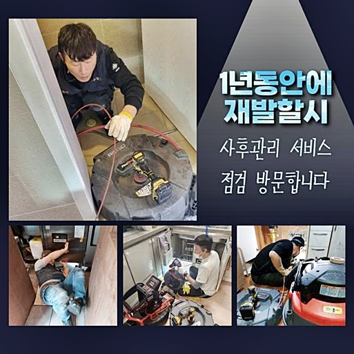
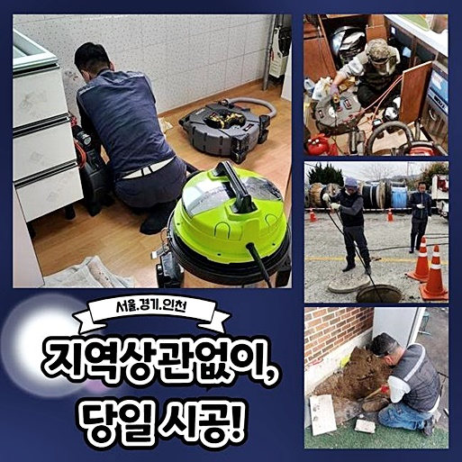
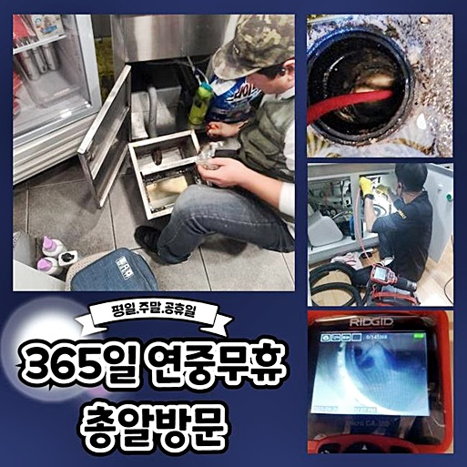
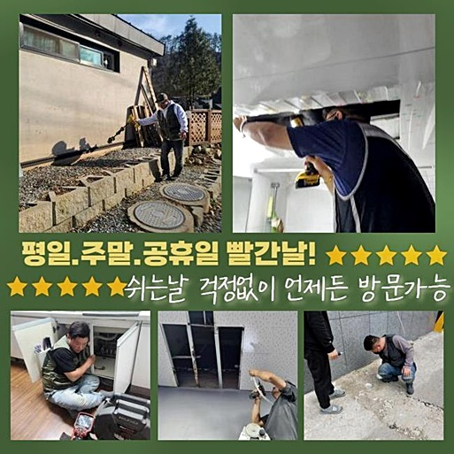
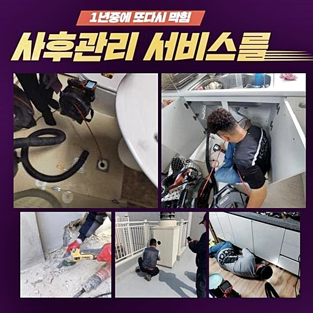
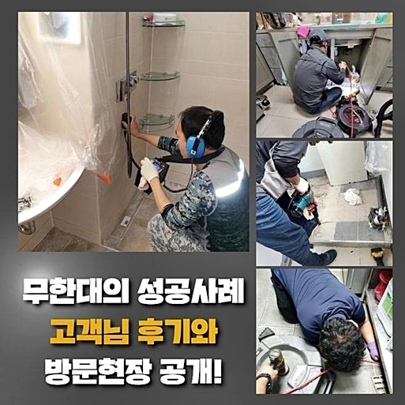

🏠 인천 송현동오수관역류 창영동 고압세척비용 부속수리
인천 배관막힘 전문 시공 후기

📋 작업 개요
- 위치: 인천
- 서비스 유형: 배관막힘, 역류해결, 배관청소, 고압세척, 배관보수, 악취차단
- 작업 일시: 2024. 6. 23. 17:39
- 업체명: 하수구수사대 (010-5615-2118)
🔍 문제 상황
인천 송현동오수관역류 창영동 고압세척비용 부속수리
배수관에 물막힘 등의 일이 일어났다면 조속하게 대응을 해 나가는 것이 추후 말썽을 줄이고 비용또한 절감할 수 있는 길이겠지만 내팽개쳐버리다 막힘이 심화된 후에 급하게 출동을 희망하시는 케이스가 거의 다라고 볼 수 있답니다
자 이제 우리팀이 시공한 세대를 통해서 파이프의 말썽에는 어째서 신속한 대처가 요구되며 이것들을 소멸하기 위하여 무슨 기기와 숙련성을 가지고 있어야 할지 안내해 드리는 소중한 시간을 가져볼게요
이제 설명할 위치는 평균적인 건조물로 문의자분은 몇 주 전에 물빠짐이 눈에 띠게 개운하게 나타나지 않다는 것을 직감하였지만 조금 시간이 흐르면 쉬이 정리될 것이라고 간주하여 가만히 방치하셨다고 해요
그러다가 몇일도 안 지나서 물이 반대로 유출되는 현상까지 발발하였으며 차츰 피해상황이 커져나가는 것을 목도하고는 빠르게 저희들에게 문의하신 거였죠
사람들이 세안을 할 때에 생기는 다채로운 슬러지가 하수관으로 들어오게 되죠
배수관은 수돗물을 통하게 만드는 설비로서 하나의 지점으로 형성된 형편이 십중팔구라고 볼 수 있는데 각 집안에서 반출되는 잔재들이 해당 위치로 쏠리게 된다면 결과적으로 배관막힘으로 이어지는 것이랍니다
이 때문에 아파트나 빌라는 막힘과 같은 증세가 다른 처소로도 닿을 수 있다는 내용을 까먹으면 안될 것입니다

🔎 원인 분석
💡 전문가 진단: 정밀 진단 장비를 사용하여 슬러지의 고착 여부를 판명하고 타격/세척 작업을 실시했습니다.
배관 안으로 투입된 잔재들은 물 안에서 용해가 어렵다는 성향이 있기 때문에 시간이 흘러가면서 사이즈를 키워나가게 되는데요
해당 사태가 지속한다면 파이프 내측을 작아지게 해서 막힘이나 악취의 이유가 됩니다
그리고 외부 처리장까지 도달하지 못한 이물들이 수분에 의해 물성이 변하면 주위로 구린내가 진동하며 기본적인 삶 자체에 트러블을 발생시키죠
수돗물을 사용할 때 배수문으로 액체 등이 소멸되는 기세가 이전과 다르게 느릿느릿하다고 파악되거나 알 수 없는 오취가 나타나는 때엔 배관찌꺼기가 누증되었을 가망성을 의식하고 전문가를 찾아 차단이 생긴 까닭을 신속하게 판단하여 줄 필요가 있어요
저희팀이 방문하게 된다면 제일 처음 내시경cctv를 위시하여 대략적인 시설을 검진하는 작업을 하는데요
파이프는 길고 좁다란 생김새로 설비되어서 직접 눈을 통해서 파악하는 것은 사실상 어려우므로 배관카메라를 넣어서 문제가 생겨난 처소를 확실하게 밝혀내야 합니다
카메라 설비와 이어진 액정화면으로 여러 변수를 종합해서 검토하니 배관 최하단 부위와 으슥한 곳을 위시하여 크고 작은 찌꺼기들이 뭉텅이가 되어서 고착화되었다는 것을 직시했습니다
긴 작업 범위를 대상으로 시공을 실시할 순간이라면 분쇄전문 공구를 투입하여 한 군데에 결집한 잔재 청소 업무를 한 다음에 물청소 전용 기구를 넣어 개략적인 소청을 하는 게 제일 옳은 길이라고 설명드립니다

🔧 작업 과정
평소 생활중 쉬이 쉽게 부닥칠 수가 있는 물막힘 상황을 방예하기 위해서는 주기적으로 유지보수를 진행하는 것이 올바르다고 말할 수 있겠지만 때마다 전문업체를 찾아 나서야 하는 데에 부담스러운 마음을 느낄 수 있겠죠
그렇지만 물막힘이나 역류증상이 발발하였을 시기에 고가의 장비를 사용하여 해결하는 것보단 정례적인 소제 관리를 이용해서 하수관을 청결하게 보존하는 편이 불필요한 소모를 검약하는 차원으로 되돌아온다는 걸 인식하시는 게 좋다고 생각돼요
어설픈 조치는 외려 배수시스템을 위태롭게 만들 수 있다는 사실을 마음속에 간직해 둘 것을 바라 봅니다
군데군데 생긴 다채로운 잔재들을 처리해 나가고자 샤프트기기를 삽입하여 돌처럼 굳은 이물질들을 부수어뜨렸으며 인접한 설비들이 다치지 않게끔 업무를 반복하였더니 상부에 있던 오수가 소멸되는 것을 직관할 수 있었네요
그후엔 특수 제작된 튜브관을 파이프에 삽입해 전면적인 물청소 업무를 이행하였는데요
공동 주택 시설은 파이프를 함께 쓸 수 있게 만들어졌기에 다량의 찌꺼기가 한순간에 누출될 수 있기 때문에 적절한 보전물품을 써서 주위를 꼼꼼하게 커버한 뒤 본 시공을 시행하는 것이 합당합니다
또 배관의 구조적 문제나 성격을 파악 못 하고서 하중을 가하게 되면 부속품의 균열이 생길 확률이 높죠
작업중에 발생가능한 다양한 변수를 방지하려면 건축물의 구조가 나와 있는 사항을 알아보고 전반적인 구조와 성질을 간파해 내는 것이 대단히 긴요한 요소라고 안내할 수 있겠습니다
저흰 숙련된 기본기를 통하여 해당 부분을 온전히 이행해낼 수 있기 때문에 일어날 수 있는 많은 변인들을 헤아리고 조심스레 시공을 실행해 드리니 마음 놓으셔도 무방합니다
장기간 유지보수가 이행되지 못하였던 자리라서 유별나게 소제가 실시되는 단계에서 엄청난 슬러지들이 배출되는 모양을 볼 수 있었죠
토출된 슬러지를 상밀히 조사했더니 일부분에서 썩은 냄새가 나는 등 심중한 상황이라는 걸 깨달을 수 있었지요
혹시 여기에서 몇 주간의 시간이라도 흘려보냈다면 악순환이 반복되었을 것이 분명하였죠
숙달된 기술력을 소지한 저희기술진이 세세하게 맡은 임무를 실행하니 답답한 막힘현상을 발생시켰던 잔재들을 말끔히 소쇄해 드릴 수 있었답니다


✅ 작업 완료
초기에 배수에 문제가 일어나면 미미하게 치부해 버리고 넘어갈 수 있겠지만 시간의 흐름에 따라서 역류증세가 나타나는 등 여러 문제점을 직시할 가능성이 높다고 볼 수 있어요
이 때문에 조금이라도 장애의 기운이 느껴진 형편이라면 아무쪼록 빠르게 조치하는 것이 좋다고 안내해 드립니다
갑자기 발발한 사태를 알맞게 고쳐낼 수 있는 곳을 구하신다면 신뢰감 넘치는 저희팀과 함께 해결해 나가시는 것을 권장합니다
숙달된 업무 역량을 토대로 문제를 세밀하게 관찰하여 경제적인 부분에도 신경을 써서 감당할 수 있는 길을 발의해 드리는 내용을 확답해 드릴 수 있으니 작업이 요청되는 경우라면 이른 아침이라도 문의 부탁드립니다



⚠️ 하수구 배관 막힘 예방 및 관리 가이드
- ✅ 머리카락, 비닐, 물티슈 등 물에 분해되지 않는 이물질은 하수구 유입을 절대 금지해 주세요.
- ✅ 하수구 거름망을 씌우고 모여진 이물질은 주기적으로 쓰레기통에 바로 비워주셔야 합니다.
- ✅ 배관 노후가 심할 경우 이물질이 더 쉽게 걸리므로 주기적인 배관 세척(고압세척 등)을 권장합니다.
- ✅ 작업 후 1년 이내 재발 시 하수구수사대에서 무상 A/S 보증 서비스를 제공합니다.
💡 핵심 정리
- 확실한 장비 작업(내시경 점검 및 샤프트 스케일링)으로 원인을 뿌리 뽑습니다.
- 작업 후 1년 이내에 동일한 부위 재발 시 100% 무상 A/S 서비스를 보장합니다.
- 서울 · 경기 · 인천 전 지역에 24시간 언제든 긴급 출동할 수 있도록 항시 대기 중입니다.
❓ 자주 묻는 질문 (FAQ)
🚨 인천 배관막힘 문제로 고민이신가요?
정확한 원인 진단과 확실한 시공으로 재발 없는 해결을 약속드립니다.
24시간 긴급 출동 | 서울 · 경기 · 인천 전지역 | 1년 내 재발 시 무상 A/S